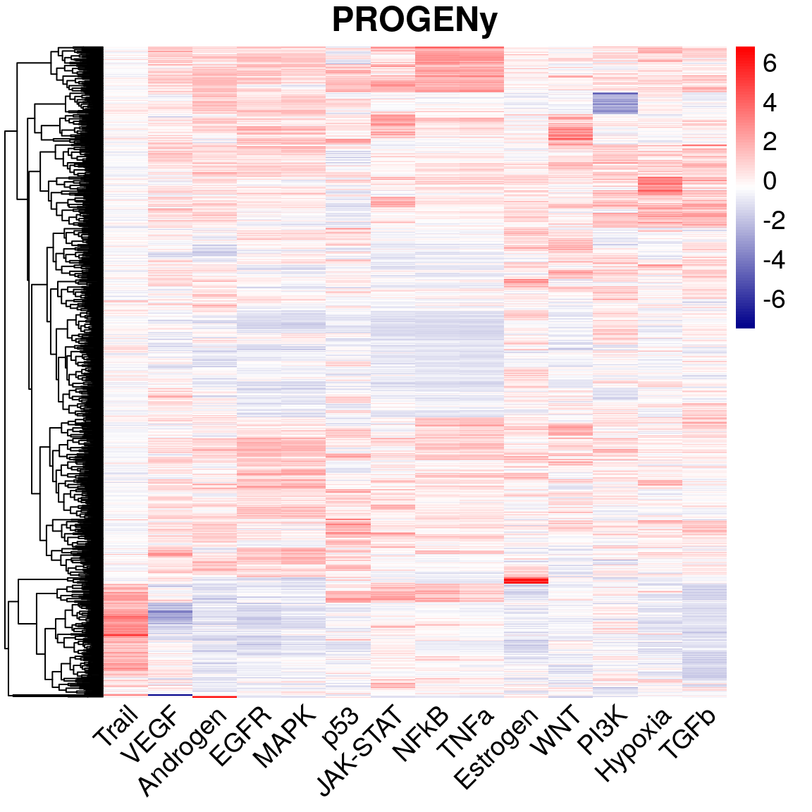

vignettes/progenyBulk.Rmd
progenyBulk.RmdThis R package provides the model we inferred in the publication “Perturbation-response genes reveal signaling footprints in cancer gene expression” and a function to obtain pathway scores from a gene expression matrix. It is available on bioRxiv.
airway package data for pathway scoresThis is to outline how to prepare expression data, in this case from the airway package for pathway activity analysis using PROGENy.
library(airway) library(DESeq2) data(airway) # import data to DESeq2 and variance stabilize dset = DESeqDataSetFromMatrix(assay(airway), colData=as.data.frame(colData(airway)), design=~dex) dset = estimateSizeFactors(dset) dset = estimateDispersions(dset) gene_expr = getVarianceStabilizedData(dset) # annotate matrix with HGNC symbols library(biomaRt) mart = useDataset("hsapiens_gene_ensembl", useMart("ensembl")) genes = getBM(attributes = c("ensembl_gene_id","hgnc_symbol"), values=rownames(gene_expr), mart=mart) matched = match(rownames(gene_expr), genes$ensembl_gene_id) rownames(gene_expr) = genes$hgnc_symbol[matched]
We can then use the progeny function to score the expression matrix. Note that we are scaling the pathway scores with respect to the controls only.
So now we might be interested how the treatment with dexamethasone affects signaling pathways. To do this, we check if the control is different to the perturbed condition using a linear model:
library(dplyr) result = apply(pathways, 1, function(x) { broom::tidy(lm(x ~ !controls)) %>% filter(term == "!controlsTRUE") %>% dplyr::select(-term) }) mutate(bind_rows(result), pathway=names(result))
## # A tibble: 14 x 5
## estimate std.error statistic p.value pathway
## <dbl> <dbl> <dbl> <dbl> <chr>
## 1 8.89 0.830 10.7 0.0000392 Androgen
## 2 1.25 3.22 0.389 0.711 EGFR
## 3 -6.90 0.830 -8.31 0.000165 Estrogen
## 4 0.783 1.92 0.408 0.698 Hypoxia
## 5 -0.972 0.657 -1.48 0.190 JAK-STAT
## 6 1.04 1.34 0.774 0.469 MAPK
## 7 0.456 0.697 0.655 0.537 NFkB
## 8 -4.42 0.787 -5.61 0.00137 p53
## 9 -0.618 1.94 -0.319 0.761 PI3K
## 10 2.34 1.09 2.15 0.0756 TGFb
## 11 0.715 0.681 1.05 0.335 TNFa
## 12 0.279 0.785 0.356 0.734 Trail
## 13 0.703 0.705 0.996 0.358 VEGF
## 14 -1.75 0.566 -3.10 0.0211 WNTWhat we see is that indeed the p53/DNA damage response pathway is less active after treatment than before.
Below is an example on how to calculate pathway scores for cell lines in the Genomics of Drug Sensitivity in Cancer (GDSC) panel, and to check for associations with drug response.
The code used for the analyses is available on Github.
This example shows how to use the GDSC gene expression data of multiple cell lines together with PROGENy to calculate pathway activity and then to check for associations with drug sensitivity.
First, we need the GDSC data for both gene expression and drug response. They are available on the GDSC1000 web site:
# set up a file cache so we download only once library(BiocFileCache) bfc = BiocFileCache(".") # gene expression and drug response base = "http://www.cancerrxgene.org/gdsc1000/GDSC1000_WebResources/Data/" paths = bfcrpath(bfc, paste0(base, c("suppData/TableS4A.xlsx", "preprocessed/Cell_line_RMA_proc_basalExp.txt.zip")))
You can also download the files manually (adjust the file names when loading):
First, we need to load the files we just downloaded into R to be able to perform the analysis:
# load the downloaded files drug_table <- readxl::read_excel(paths[1], skip=5, na="NA") drug_table <- replace(drug_table, is.na(drug_table), 0) gene_table <- readr::read_tsv(paths[2]) # we need drug response with COSMIC IDs drug_response <- data.matrix(drug_table[,3:ncol(drug_table)]) rownames(drug_response) <- drug_table[[1]] # we need genes in rows and samples in columns gene_expr <- data.matrix(gene_table[,3:ncol(gene_table)]) colnames(gene_expr) <- sub("DATA.", "", colnames(gene_expr), fixed=TRUE) rownames(gene_expr) <- gene_table$GENE_SYMBOLS
Activity inference is done using a weighted sum of the model genes. We can run this without worrying about the order of genes in the expression matrix using:
library(progeny) pathways <- progeny(gene_expr,scale = TRUE, organism = "Human", top = 100, perm = 1, verbose = FALSE)
To visualize the progeny result
library(pheatmap) myColor = colorRampPalette(c("Darkblue", "white","red"))(100) pheatmap(pathways,fontsize=14, show_rownames = FALSE, color=myColor, main = "PROGENy", angle_col = 45, treeheight_col = 0, border_color = NA)

We now have the pathway activity scores for the pathways defined in PROGENy:
head(pathways)
## Androgen EGFR Estrogen Hypoxia JAK-STAT MAPK
## 906826 -0.4241254 0.1385179 -0.269674710 -0.06875973 -0.37598907 0.41134699
## 687983 -1.7393225 -0.9213671 -0.763490640 -1.32374232 -0.94662180 -0.90704066
## 910927 -1.5393075 -0.0695914 1.613512221 -0.76482836 -1.05428545 0.17412564
## 1240138 0.9107488 -0.2200467 0.219584368 -0.73615734 -0.07536995 -0.60238190
## 1240139 -1.0602951 -0.1846655 -0.556250681 0.13664228 -0.58644833 -0.04550095
## 906792 0.7518034 0.8045299 0.008914293 0.40118664 -0.50038060 0.77199885
## NFkB p53 PI3K TGFb TNFa Trail
## 906826 -0.6374683 -1.0903096 -0.1953806 -0.7793323 -0.4329185 -0.8018626
## 687983 -1.3157127 -0.8692247 0.2542425 -0.8242281 -1.0195560 -0.5104074
## 910927 -0.3059911 0.8896616 -0.7487845 0.7580845 -0.1756034 -0.8092882
## 1240138 0.9755970 2.0632167 0.4839630 1.9108565 0.9865983 -0.2377919
## 1240139 -0.4751547 0.8763231 1.3814461 0.9999634 -0.3916422 -0.9224493
## 906792 -0.1878324 -0.8895494 -3.0379834 -0.3389734 -0.1436331 0.2455631
## VEGF WNT
## 906826 -0.13639016 0.01831199
## 687983 -0.08663407 -0.72986989
## 910927 0.13321227 2.28602257
## 1240138 0.01391272 1.51533198
## 1240139 0.90296847 1.71036886
## 906792 0.18149340 -1.22160214Trametinib is a MEK inhibitor, so we would assume that cell lines that have a higher MAPK activity are more sensitive to MEK inhibition.
We can test this the following way:
cell_lines = intersect(rownames(pathways), rownames(drug_response)) trametinib = drug_response[cell_lines, "Trametinib"] mapk = pathways[cell_lines, "MAPK"] associations = lm(trametinib ~ mapk) summary(associations)
##
## Call:
## lm(formula = trametinib ~ mapk)
##
## Residuals:
## Min 1Q Median 3Q Max
## -6.548 -1.255 0.338 1.338 6.819
##
## Coefficients:
## Estimate Std. Error t value Pr(>|t|)
## (Intercept) -0.94703 0.06442 -14.70 <2e-16 ***
## mapk -1.35978 0.06449 -21.09 <2e-16 ***
## ---
## Signif. codes: 0 '***' 0.001 '**' 0.01 '*' 0.05 '.' 0.1 ' ' 1
##
## Residual standard error: 1.998 on 960 degrees of freedom
## Multiple R-squared: 0.3165, Adjusted R-squared: 0.3158
## F-statistic: 444.6 on 1 and 960 DF, p-value: < 2.2e-16And indeed we find that MAPK activity is strongly associated with sensitivity to Trametinib: the Pr(>|t|) is much smaller than the conventional threshold of 0.05.
The intercept is significant as well, but we’re not really interested if the mean drug response is above or below 0 in this case.
Note, however, that we tested all cell lines at once and did not adjust for the effect different tissues may have.
## R version 4.0.2 (2020-06-22)
## Platform: x86_64-pc-linux-gnu (64-bit)
## Running under: Ubuntu 20.04.1 LTS
##
## Matrix products: default
## BLAS: /usr/lib/x86_64-linux-gnu/blas/libblas.so.3.9.0
## LAPACK: /usr/lib/x86_64-linux-gnu/lapack/liblapack.so.3.9.0
##
## locale:
## [1] LC_CTYPE=en_GB.UTF-8 LC_NUMERIC=C
## [3] LC_TIME=en_GB.UTF-8 LC_COLLATE=en_GB.UTF-8
## [5] LC_MONETARY=en_GB.UTF-8 LC_MESSAGES=en_GB.UTF-8
## [7] LC_PAPER=en_GB.UTF-8 LC_NAME=C
## [9] LC_ADDRESS=C LC_TELEPHONE=C
## [11] LC_MEASUREMENT=en_GB.UTF-8 LC_IDENTIFICATION=C
##
## attached base packages:
## [1] parallel stats4 stats graphics grDevices utils datasets
## [8] methods base
##
## other attached packages:
## [1] pheatmap_1.0.12 BiocFileCache_1.12.1
## [3] dbplyr_1.4.4 dplyr_1.0.2
## [5] progeny_1.11.2 biomaRt_2.44.1
## [7] DESeq2_1.28.1 airway_1.8.0
## [9] SummarizedExperiment_1.18.2 DelayedArray_0.14.1
## [11] matrixStats_0.56.0 Biobase_2.48.0
## [13] GenomicRanges_1.40.0 GenomeInfoDb_1.24.2
## [15] IRanges_2.22.2 S4Vectors_0.26.1
## [17] BiocGenerics_0.34.0 knitr_1.29
## [19] BiocStyle_2.16.0
##
## loaded via a namespace (and not attached):
## [1] bitops_1.0-6 fs_1.5.0 bit64_4.0.5
## [4] RColorBrewer_1.1-2 progress_1.2.2 httr_1.4.2
## [7] rprojroot_1.3-2 tools_4.0.2 backports_1.1.9
## [10] utf8_1.1.4 R6_2.4.1 DBI_1.1.0
## [13] colorspace_1.4-1 gridExtra_2.3 tidyselect_1.1.0
## [16] prettyunits_1.1.1 curl_4.3 bit_4.0.4
## [19] compiler_4.0.2 cli_2.0.2 desc_1.2.0
## [22] bookdown_0.20 scales_1.1.1 readr_1.3.1
## [25] genefilter_1.70.0 askpass_1.1 rappdirs_0.3.1
## [28] pkgdown_1.5.1 stringr_1.4.0 digest_0.6.25
## [31] rmarkdown_2.3 XVector_0.28.0 pkgconfig_2.0.3
## [34] htmltools_0.5.0 readxl_1.3.1 rlang_0.4.7
## [37] rstudioapi_0.11 RSQLite_2.2.0 generics_0.0.2
## [40] BiocParallel_1.22.0 RCurl_1.98-1.2 magrittr_1.5
## [43] GenomeInfoDbData_1.2.3 Matrix_1.2-18 fansi_0.4.1
## [46] Rcpp_1.0.5 munsell_0.5.0 lifecycle_0.2.0
## [49] stringi_1.4.6 yaml_2.2.1 MASS_7.3-52
## [52] zlibbioc_1.34.0 grid_4.0.2 blob_1.2.1
## [55] ggrepel_0.8.2 crayon_1.3.4 lattice_0.20-41
## [58] splines_4.0.2 annotate_1.66.0 hms_0.5.3
## [61] locfit_1.5-9.4 pillar_1.4.6 geneplotter_1.66.0
## [64] XML_3.99-0.5 glue_1.4.2 evaluate_0.14
## [67] BiocManager_1.30.10 vctrs_0.3.4 cellranger_1.1.0
## [70] tidyr_1.1.2 gtable_0.3.0 openssl_1.4.2
## [73] purrr_0.3.4 assertthat_0.2.1 ggplot2_3.3.2
## [76] xfun_0.16 broom_0.7.0 xtable_1.8-4
## [79] survival_3.1-12 tibble_3.0.3 AnnotationDbi_1.50.3
## [82] memoise_1.1.0 ellipsis_0.3.1